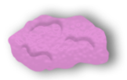
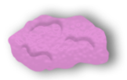
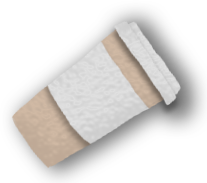
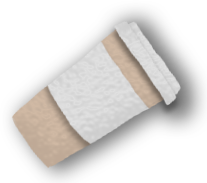
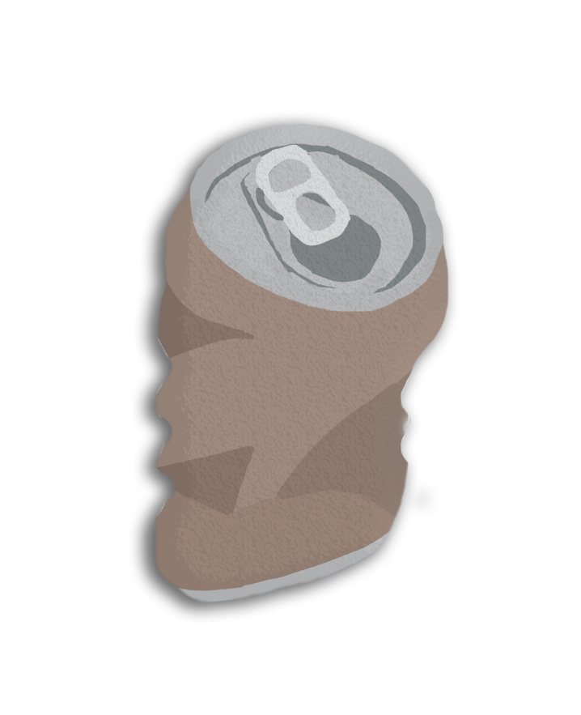
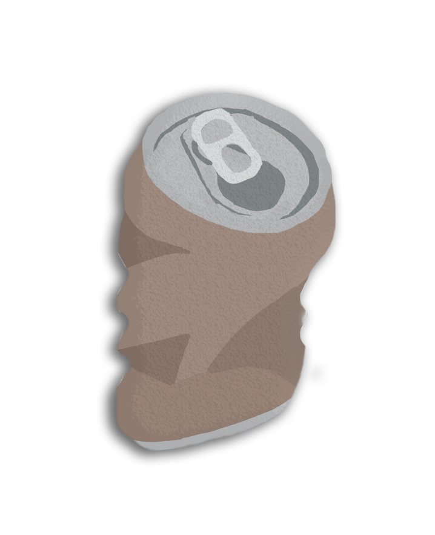

 

Alt skrald er
Stort skrald
Velkommen til Ren By's nye kampagne, der skal hjælpe Aarhus med at blive en ren og skøn by at færdes i! Her på siden kan du finde forskellige typer indhold i kampagnen, for eksempel videoen nedenfor! Naviger rundt på siden og hjælp os med at holde byen ren!
 
